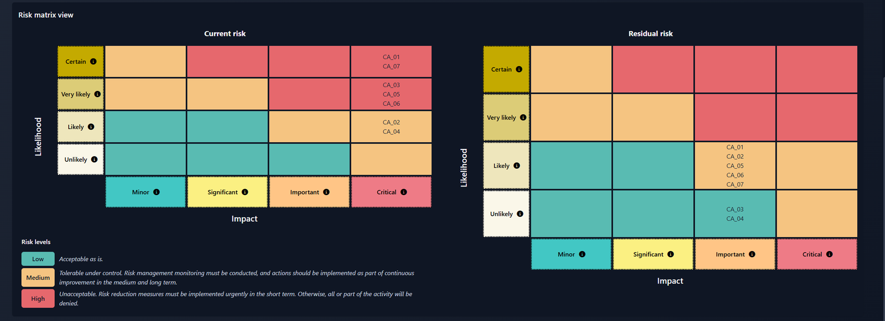
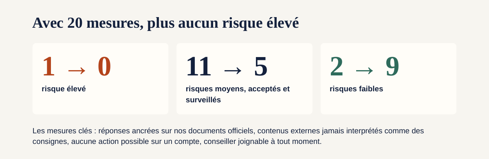

Ylayann Malouda-Ribardiere
Étudiant en BTS SIO option SISR à Ynov Lille, je me spécialise en gouvernance, risques et conformité. Je mets actuellement en place un SMSI ISO 27001 chez Ozibe, une start-up qui développe une application mobile utilisant l'IA. J'analyse les risques avec EBIOS RM et je m'intéresse à la gouvernance de l'IA. Les CTF me servent à comprendre concrètement les chemins d'attaque que mes analyses de risque décrivent.
ylayann@ynov:~$ cat profil.txt formation : BTS SIO option SISR, Ynov Lille cible : GRC · gestion des risques · conformité référentiels : ISO 27001 · EBIOS RM · ISO 42001 · DORA · RGPD en cours : mise en place d'un SMSI ISO 27001 chez Ozibe projets : SMSI néobanque fictive · IA ISO 42001 / AI Act pratique : CTF web pour comprendre les chemins d'attaque objectif : Bachelor 3 Cybersécurité + alternance GRC, sept. 2027 ylayann@ynov:~$
À propos
Qui je suis et ce que je cherche
Après deux ans de licence de droit, je suis passé en BTS SIO option SISR (Solutions d'infrastructure, systèmes et réseaux) à Ynov Lille, en alternance. Je vise un poste en GRC : traduire les menaces en risques compréhensibles par une direction, puis en mesures concrètes, chiffrées et suivies.
Depuis novembre 2026, je mets en place un SMSI ISO 27001 en conditions réelles chez Ozibe, en mission bénévole et en lien direct avec le fondateur : cadrage du périmètre, analyse de risques, politiques de sécurité.
Avant ça, mon projet SMSI Orséa Banque m'a fait passer par toutes les étapes, de l'analyse EBIOS RM à la présentation au comité exécutif. En parallèle, je résous des challenges CTF et je les documente : une analyse de risque est meilleure quand on sait comment l'attaque se déroule vraiment.
Mes stages en support, en automatisation et en développement m'ont donné le terrain technique qui va avec : parc informatique, Linux, Ansible, VMware et intégration d'IA.
$ experiences --list
Ozibe · mission bénévole · depuis nov. 2026
Mise en place d'un SMSI ISO 27001 dans une start-up qui développe une application mobile utilisant l'IA : périmètre, analyse de risques, politiques de sécurité (en cours).
Mairie de Lille · alternance · depuis août 2026
Gestion des comptes et des droits d'accès (IAM) sous Active Directory, postes de travail, support N1/N2.
Ezytech · juil. → août 2026
Playbooks Ansible de patch management (Debian 12 → 13) et déploiement d'applications métier.
Ozibe · sept. 2025 → mars 2026
Développement d'applications intégrant des modèles d'IA (LLM).
Ynov Lille · 2025 → 2027
Infrastructure, systèmes, réseaux et cybersécurité.
Université de Lille · 2023 → 2025
Sciences juridiques : un vrai atout pour lire les textes de conformité (RGPD, AI Act, DORA).
Compétences
GRC d'abord, avec le socle technique pour comprendre ce qu'on protège
$ grc --core
$ grc --ia
$ offensif --comprendre
$ infra --sys --net
$ support
$ dev --outils
Certifications et formations
Ce que j'ai validé en dehors du BTS
Information Security Management based on ISO/IEC 27001
Competency Certificate · PECB Skills · oct. 2026
Voir le certificat →ISO 42001 AI Governance Fundamentals (I42001AIGF™)
CertiProf · oct. 2026 · valide jusqu'en oct. 2027
Voir l'attestation →L'atelier RGPD
CNIL · sept. 2026
Ethical Hacker
Cisco Networking Academy
Projet phare · SMSI Orséa Banque
ISO 27001 et analyse de risques EBIOS RM, menés de A à Z sur une néobanque fictive
Analyse de risques EBIOS RM en cinq ateliers, évaluation des 93 contrôles de l'Annexe A d'ISO 27001:2022, plan de traitement chiffré, PSSI en 15 sections et présentation au comité exécutif. Réalisé avec CISO Assistant en local sous Docker.

Orséa Banque est une entreprise fictive : les chiffres et budgets sont inventés pour l'exercice.
Projet · IA d'Orséa Banque
Classification AI Act, analyse de risques d'un assistant conversationnel et système de management ISO/IEC 42001
Orséa veut lancer Léa, un assistant conversationnel pour ses clients. J'ai classé les trois systèmes d'IA de la banque selon l'AI Act, analysé les risques de Léa avec l'OWASP Top 10 LLM (dont l'injection cachée dans un libellé de virement) et construit le système de management ISO 42001, des clauses 4 à 10 jusqu'au pré-audit. Le seul risque élevé n'était pas une attaque, mais la réponse inventée.

Pilotage et conformité
Ce qui vient après l'analyse de risques : suivre le SMSI dans le temps et le relier aux obligations réglementaires
$ smsi --dashboard
Le tableau de bord présenté au COMEX : risques avant et après traitement, état initial des 93 contrôles, plan de traitement par priorité et 12 indicateurs de pilotage (clause 9.1).
$ mapping --rgpd --dora
Correspondance article par article entre le RGPD, DORA et les contrôles ISO 27001 : ce que le SMSI couvre déjà, ce qui est partiel et les écarts à traiter en plus.
Write-ups CTF
Je résous des challenges pour comprendre les chemins d'attaque que j'évalue en analyse de risque. Le dépôt complet sur GitHub →
Injection SQL sur DVWA
D'un simple champ « User ID » jusqu'à l'extraction des identifiants de tous les comptes, en UNION-based.
IDOR sur BluePortal
Un mot de passe faible, un paramètre id=2 changé en id=1, et me voilà admin.
Path Traversal sur File Viewer
Lire des fichiers hors du dossier prévu grâce à un paramètre d'URL mal contrôlé.
Publications
Je partage régulièrement sur LinkedIn ce que j'apprends en GRC : ISO 27001, EBIOS RM, gouvernance de l'IA, AI Act, DORA.
Contact
Je cherche une alternance en GRC pour septembre 2027, en parallèle d'un Bachelor 3 Cybersécurité (Lille, Paris, Lyon, Rennes ou ailleurs). Gouvernance de l'IA, conformité, gestion des risques. Écris-moi par mail, appelle-moi ou contacte-moi sur LinkedIn.